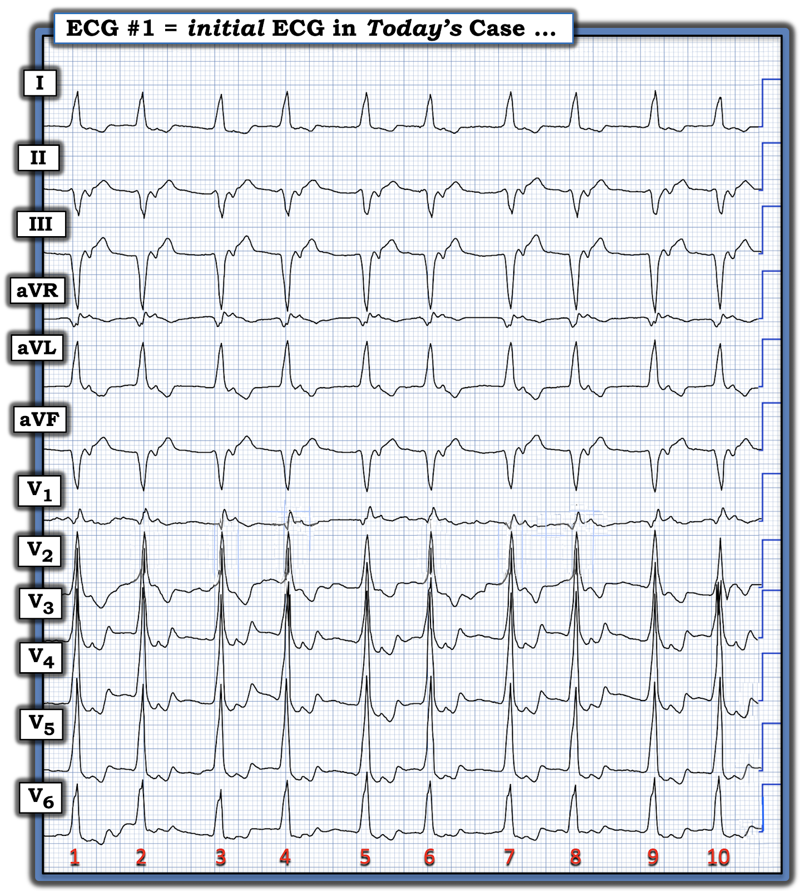
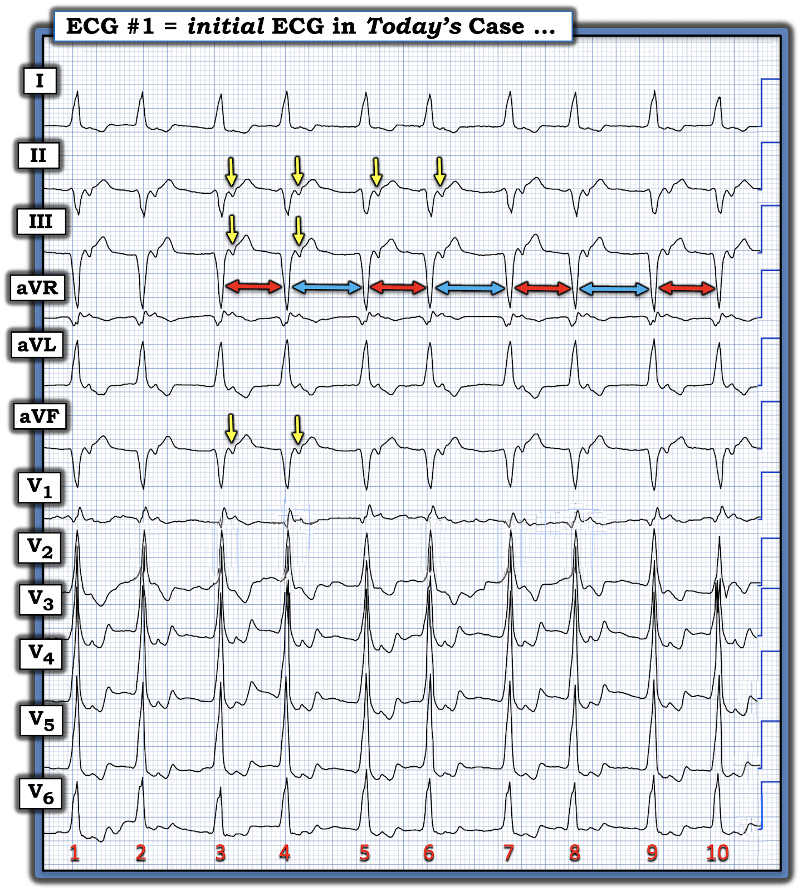
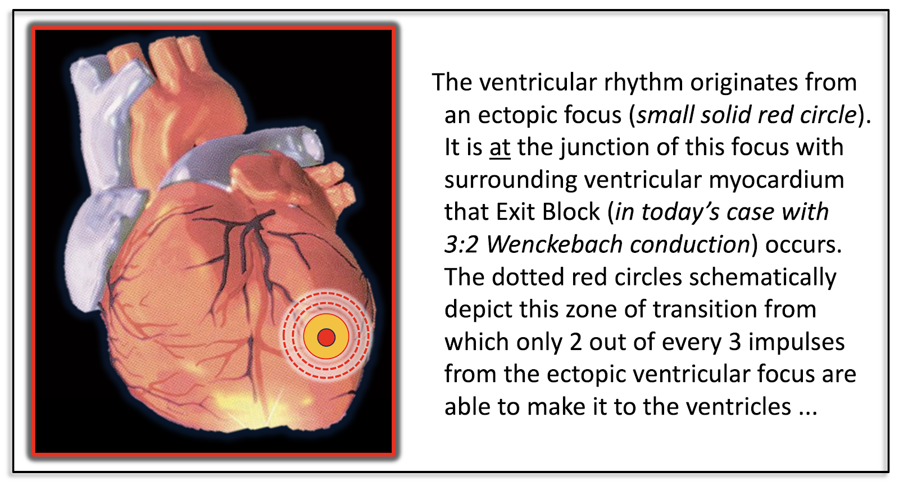
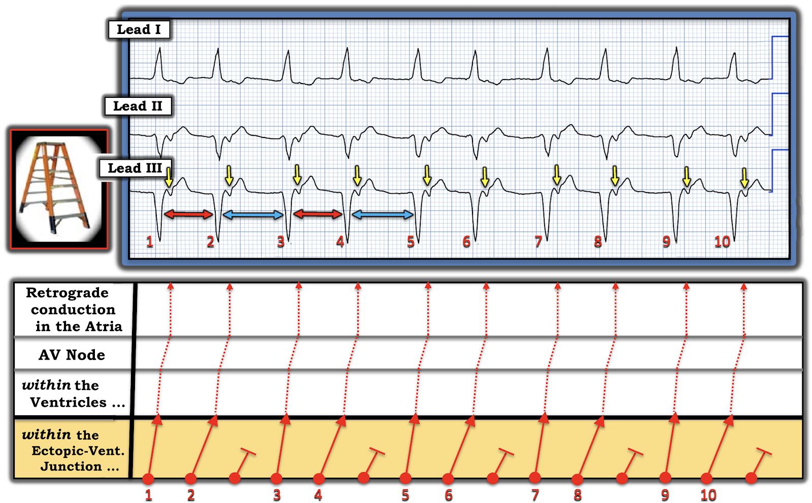

ECG Blog #528 — Bệnh nhân quyết định bỏ về
Điện tâm đồ ở Hình 1 được ghi từ một bệnh nhân trung niên — đến khám vì hồi hộp đánh trống ngực. Bệnh nhân đã biết có bệnh tim thiếu máu cục bộ, và ổn định huyết động với nhịp này.
CÂU HỎI:
- Bạn đọc nhịp ở Hình 1 như thế nào?
- Về lâm sàng — BẠN sẽ làm gì?


= = = = = = = = = = = = = = = = = = = =
SUY NGHĨ BAN ĐẦU CỦA TÔI:
Tôi thấy nhịp này thật hấp dẫn! "Tin tốt" — là bệnh nhân hôm nay ổn định huyết động với nhịp này — điều đó cho chúng ta biết rằng ít nhất chúng ta cũng có một "khoảnh khắc" để suy xét điều gì đang diễn ra.
- Như thường lệ — tôi ưa dùng Cách tiếp cận Ps,Qs,3Rs để đọc nhịp một cách hệ thống (Xem ECG Blog #185 để ôn lại Ps,Qs,3Rs).
- GỢI Ý #1: Bạn tìm sóng P, độ rộng QRS, và 3 chữ R gồm tần số (Rate), tính đều của nhịp (Regularity), và hoạt động nhĩ có (hay không) liên quan (Related) với các phức bộ QRS lân cận theo thứ tự nào thì cũng không quan trọng.
- GỢI Ý #2: Đôi khi lùi ra xa bản ghi một chút sẽ giúp ích khi đánh giá tính đều (Regularity) của nhịp.
- GỢI Ý #2: Dùng compa đo (calipers) sẽ đặc biệt hữu ích để đọc nhịp ở Hình 1.
= = = = = = = = = = = = = = = = = = = =
THỬ THÁCH: Tôi đã đánh dấu bản ghi hôm nay ở Hình 2 bên dưới — nhưng trước khi xem tôi đánh dấu thế nào — BẠN đã nghĩ gì?
= = = = = = = = = = = = = = = = = = = =


Đánh giá Ps, Qs và 3Rs ở điện tâm đồ hôm nay:
Những suy nghĩ của tôi, theo thứ tự chúng xuất hiện, như sau:
- Vì tôi không thấy sóng P dương đứng trước các phức bộ QRS lân cận — tôi biết nhịp này không phải nhịp xoang.
- QRS rộng (rõ ràng là rộng hơn nửa ô lớn).
- Tần số (Rate) của nhịp này không quá nhanh (tức là với khoảng R-R ~3 ô lớn = khoảng 100/phút).
- Mặc dù ban đầu có thể nghĩ nhịp này đều — việc lùi ra xa bản ghi một chút cho phép chúng ta nhận ra rằng nhịp này chắc chắn không đều (Regular). Thay vào đó — có một "tính không đều có quy luật" — dưới dạng nhịp theo nhóm (group beating) (Dùng compa đo giúp dễ nhận ra rằng có các khoảng R-R ngắn hơn [ĐỎ] — rồi dài hơn [XANH] xen kẽ nhau).
- Xem kỹ hơn các phức bộ QRS (đặc biệt ở các chuyển đạo dưới) — một sóng âm nhọn đi theo sau mỗi phức bộ QRS ở các chuyển đạo II,III,aVF với một khoảng cách cố định sau mỗi nhát trong 10 nhát của bản ghi này (các mũi tên VÀNG). Các sóng âm này là sóng P ngược dòng với khoảng RP' cố định ( = dẫn truyền thất-nhĩ (VA) 1:1).
- Nhìn vào các chuyển đạo aVR,aVL,V1 ghi đồng thời — chúng ta có thể thấy một sóng dương nhỏ, nhọn xảy ra đúng cùng thời điểm với các sóng âm này. Điều này xác nhận rằng các sóng âm ở mũi tên VÀNG này thực sự là sóng P ngược dòng (tức là các sóng P này liên quan (Related) với các phức bộ QRS đứng trước bằng một khoảng RP' cố định — và nhịp này không phải AFib).
Nhận định của tôi về nhịp hôm nay:
Xin nhấn mạnh: Đây là một nhịp cực kỳ phức tạp! Những gì trình bày dưới đây hoàn toàn Vượt ra ngoài phần cốt lõi (Beyond-the-Core)!
- Đến thời điểm này trong đánh giá của tôi, với QRS giãn rộng kèm sóng P ngược dòng — tôi nghi ngờ một nhịp thất với dấu hiệu bất thường là nhịp theo nhóm.
- Dấu hiệu nhịp theo nhóm luôn luôn phải gợi ý khả năng dẫn truyền Wenckebach (Xem ECG Blog #164 và Blog #457 và Blog #66, cùng các bài khác). Điều quan trọng là cần nhận ra rằng "dẫn truyền Wenckebach" không chỉ giới hạn ở blốc AV độ 2 Mobitz loại I. Thay vào đó — tính chu kỳ Wenckebach có thể gặp trong blốc SA, trong AFib, AFlutter và ATach; trong dẫn truyền ngược dòng — và đôi khi (như ca hôm nay dường như là vậy) — trong các nhịp thất!
- Như tôi minh họa bằng sơ đồ ở Hình 3 — điều có thể xảy ra là có một nhịp thất biểu hiện một dạng blốc đường ra Wenckebach ra khỏi ổ ngoại vị thất, tại chỗ nối giữa ổ này với cơ tim thất (Cảm ơn BS Harry Mond vì lời giải thích của ông về hiện tượng hấp dẫn và hiếm gặp này — Harry's Corner ngày 3 tháng Ba năm 2025).


Minh họa bằng giản đồ bậc thang:
Ở Hình 4 — tôi minh họa bằng sơ đồ những gì dường như đang xảy ra với blốc đường ra trong
ca hôm nay.
- Tầng tô màu CAM phía dưới trong giản đồ bậc thang này biểu diễn các sự kiện phát ra từ ổ ngoại vị thất mà tôi đã vẽ dạng sơ đồ ở Hình 3.
- Như có thể thấy trong giản đồ bậc thang ở Hình 4 — do blốc đường ra Wenckebach, chỉ có 2 trong mỗi 3 xung động thoát ra được khỏi ổ ngoại vị thất này (Tầng tô màu Cam) để đến được tâm thất.
- ĐIỂM THEN CHỐT (PEARL) #1: Nếu không có blốc đường ra — tần số của nhịp thất ngoại vị này trong ca hôm nay sẽ nhanh hơn đáng kể so với những gì ta thấy. Chúng ta chỉ thấy 2 trong mỗi 3 xung động thất trên điện tâm đồ bề mặt. Khoảng R-R chứa 2 nhát thất này trên điện tâm đồ bề mặt bằng khoảng cách giữa nhát #1 và nhát #3 (dài khoảng ~6 ô lớn). Kết quả là — tần số trung bình của nhịp thất trên điện tâm đồ bề mặt (tức là ở Hình 4) là ~100/phút.
- Nhưng bên trong ổ ngoại vị thất — có 3 (chứ không phải hai) xung động xảy ra trong khoảng R-R ~6 ô lớn này. Như vậy, bên trong ổ thất — cứ mỗi 2 ô lớn lại có một xung động được tạo ra — và 300 ÷ 2 =150/phút. Điều này có nghĩa là nếu không có blốc đường ra Wenckebach 3:2 — thì ổ ngoại vị thất sẽ tạo ra một nhịp nhanh thất với tần số 150/phút!
- Tiếp tục với giản đồ bậc thang ở Hình 4 — Một khi 2 trong 3 xung động thất thoát ra khỏi chỗ nối giữa ổ ngoại vị và cơ tim thất — chúng khử cực cơ tim thất — và trong ca hôm nay, còn tạo ra dẫn truyền ngược dòng 1:1 trở lên tâm nhĩ (các mũi tên VÀNG với khoảng RP' cố định sau mỗi nhát thất).


Có khả năng nào khác cho nhịp hôm nay không?
Hình dạng QRS ở Hình 2 ủng hộ khả năng đây là một nhịp thất. Đó là vì:
- Hình dạng QRS trong bản ghi này không giống bất kỳ dạng blốc dẫn truyền thường gặp nào (tức là Mặc dù bản ghi hôm nay có phù hợp với dẫn truyền kiểu LBBB ở các chuyển đạo chi [với QRS dương hoàn toàn ở các chuyển đạo I và aVL] — nhưng nó biểu hiện một hình ảnh rất không điển hình cho cả dẫn truyền kiểu LBBB lẫn RBBB ở các chuyển đạo ngực [có dạng qR ở chuyển đạo V1, nhưng phức bộ QRS dương, cao ở mỗi chuyển đạo trong 5 chuyển đạo ngực còn lại]).
ĐIỂM THEN CHỐT (PEARL) #2: Hiếm khi — có thể gặp một hình dạng QRS trên thất giống dẫn truyền kiểu LBBB ở các chuyển đạo chi, nhưng giống dẫn truyền kiểu RBBB ở các chuyển đạo ngực. Hình ảnh này được gọi là MBBB (blốc nhánh ngụy trang – Masquerading Bundle Branch Block — Xem ECG Blog #517).
- Về nhịp ở Hình 2 — mặc dù tôi nghĩ một nhịp thất kèm blốc đường ra Wenckebach ra khỏi ổ thất là giải thích có khả năng nhất cho tính không đều có quy luật mà chúng ta thấy ở bản ghi hôm nay — tôi không thể loại trừ khả năng đây là một nhịp bộ nối kèm MBBB có sẵn từ trước và dẫn truyền Wenckebach ra khỏi nút AV.
= = = = = = = = = = = = = = = = = = = =
CÂU HỎI Thử thách:
Chúng ta đi đến vấn đề làm thế nào để tăng độ chắc chắn cho chẩn đoán nhịp? — và vấn đề lâm sàng: Xử trí bệnh nhân hôm nay thế nào là tốt nhất? Hãy cân nhắc những điều sau:
- Nếu bạn có thể hỏi bệnh nhân này 1 câu hỏi — Câu hỏi đó sẽ là gì?
- Nếu có 1 điều bạn có thể lấy được từ việc xem lại hồ sơ bệnh án của bệnh nhân này — Bạn sẽ tìm điều gì?
Trả lời của tôi:
Ngoài việc xem một số kết quả xét nghiệm cơ bản (chức năng thận, điện giải đồ huyết thanh, v.v.) và tìm hiểu thêm bất cứ điều gì có thể về bệnh nhân này:
- Tôi muốn biết bệnh nhân này đang dùng (các) thuốc gì? (tức là Để xem có thuốc nào có thể làm bệnh nhân dễ bị rối loạn nhịp thất không — và đặc biệt để hỏi xem bệnh nhân có đang dùng Digoxin không [vì ngộ độc Digoxin nổi tiếng là gây rối loạn nhịp thất và dẫn truyền Wenckebach]).
- Tôi muốn xem một điện tâm đồ trước đây của bệnh nhân này (tức là Để xem hình dạng QRS bất thường thấy ở Hình 2 đã có từ trước trong nhịp xoang hay chưa).
= = = = = = = = = = = = = = = = = = = =
KẾT LUẬN CA BỆNH:
Xem lại hồ sơ bệnh án cho thấy bệnh nhân này không dùng Digoxin. Tuy nhiên, ông ấy đang được điều trị tâm thần (và đang dùng Respiridone).
- Từ lâu đã biết rằng các thuốc chống loạn thần điển hình (tức là Chlorpromazine, Haloperidol, Thioridazine, v.v.) làm tăng nguy cơ rối loạn nhịp tim nghiêm trọng, thậm chí gây tử vong. Có vẻ như các thuốc chống loạn thần không điển hình thế hệ mới (bao gồm Respiridone) cũng làm tăng đáng kể nguy cơ này (Ray và cs. — N Engl J Med 360(3):225-235, 2009). Cơ chế được cho là do chẹn kênh kali làm kéo dài quá trình tái cực của tim. Respiridone có làm kéo dài QTc — nhưng bản thân nó thường không đủ để khởi phát xoắn đỉnh (Torsades de Pointes).
- Không tìm thấy điện tâm đồ nào trước đây trong hồ sơ của bệnh nhân này (và hồ sơ bệnh án cũng không có dấu hiệu nào cho thấy bệnh nhân từng có rối loạn nhịp trước đó).
- Bệnh nhân không hợp tác — và đã ký giấy ra viện trái với lời khuyên của bác sĩ (Bệnh nhân được đánh giá là đủ năng lực tâm thần để làm việc đó).
- “Tin tốt” — là việc bệnh nhân này cảm thấy đủ khỏe để quyết định rời đi cho thấy ông ấy không có triệu chứng với rối loạn nhịp này.
- Đáng tiếc — không có thêm thông tin theo dõi.
==================================
Lời cảm ơn: Xin cảm ơn Cardiology Notes (trang điện tâm đồ trên FB) đã cho phép tôi sử dụng ca này.
- Xin đặc biệt cảm ơn Omar Hassan Seddik (thành phố Mansoura, Ai Cập) và Khaled Ash (từ Damascus, Syria) vì những ý kiến đóng góp và đã giúp tôi chú ý đến ca này.
==================================